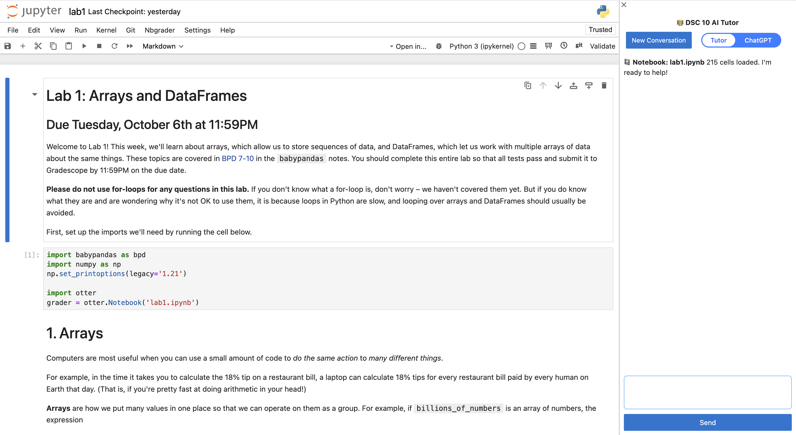

DSC 10 AI Tutor
React, TypeScript, Python, Tornado, Gemini | UC San Diego

A full-stack JupyterLab extension that puts an AI tutor right next to students' notebooks in DSC 10 at UC San Diego. The tutor reads the live notebook, including the active cell, the lab instructions, and outputs, so its answers are grounded in what the student is working on. A retrieval layer surfaces relevant lecture examples using TF-IDF with Gemini reranking, and the tutor uses Socratic prompting that sticks to course-specific tools like babypandas, with an exam mode and topic-based practice. It has been used by around 400 students across 2 quarters, with around 88,000 tutoring sessions logged.